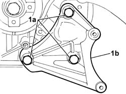
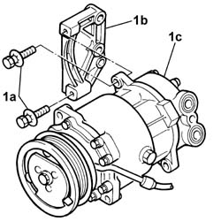

5040A25 COMPRESSOR BRACKET - R R
- Path
- Procedures > 50 AUXILIARY UNITS > 5040 AIR CONDITIONING CASING AND COMPONENTS > 5040A CHECKING OPERATION OF AIR CONDITIONER (TEMPERATURE) > 5040A25 COMPRESSOR BRACKET - R R
- Kind
- repair procedure (removal / refitting; the operation number is the code)
- Applies to
- engines: 3.0 24V V6; all production periods
- Interactive page
- https://sloeber94.github.io/elrnDB-fUlss/en/#/179007462
Applies to: engines: 3.0 24V V6; all production periods
 Removing
Removing
 Refitting
Refitting- Position the vehicle on the lift.
- Disconnect the negative battery terminal.
Description | Connector | |
|---|---|---|
. | Battery | A001B |
Op. 0010T84 COOLANT FOR AIR CONDITIONING SYSTEM DEHYDRATE AND RECHARGE
Op. 4450B04 RIGHT FRONT WHEEL R R
Op. 7055B91 RIGHT FRONT WHEEL ARCH LINER - R.R.
Op. 4410D16 BRACKET (ONE) RETAINING CHASSIS TO BODY - R R
See in Op. 1092G10
Op. 5040A20 AIR CONDITIONER COMPRESSOR - R+R - INCLUDES FLUID LEVEL CHECK AND TOP UP IF NECESSARY
1. Undo the fixing bolts (1a) and remove the timing side mounting bracket (1b).

Applies to: engines: 3.0 24V V6; all production periods
1. Undo the fixing bolt (1a) and separate the flywheel side bracket (1b) from the compressor (1c).

Applies to: engines: 3.0 24V V6; all production periods
Refitting
Removing- Position the flywheel side mounting bracket on the air conditioning system compressor and tighten the fixing bolts to the recommended torque.
 | Value - daNm | Fastening | Component | Ø |
|---|---|---|---|---|
. | 4 | Bolts | AIR CONDITIONING COMPRESSOR MOUNTING BRACKET AIR |
- Position the air conditioning compressor timing side mounting bracket and tighten the fixing bolts to the recommended torque.
| Value - daNm | Fastening | Component | Ø |
|---|---|---|---|---|
. | 4 | Bolts | AIR CONDITIONING COMPRESSOR MOUNTING BRACKET AIR |
Op. 5040A20 AIR CONDITIONER COMPRESSOR - R+R - INCLUDES FLUID LEVEL CHECK AND TOP UP IF NECESSARY
See in Op. 1092G10
Op. 4410D16 BRACKET (ONE) RETAINING CHASSIS TO BODY - R R
Op. 7055B91 RIGHT FRONT WHEEL ARCH LINER - R.R.
Op. 4450B04 RIGHT FRONT WHEEL R R
Op. 0010T84 COOLANT FOR AIR CONDITIONING SYSTEM DEHYDRATE AND RECHARGE
- Connect the negative battery terminal.
Description | Connector | |
|---|---|---|
. | Battery | A001B |
- Remove the vehicle from the lift.